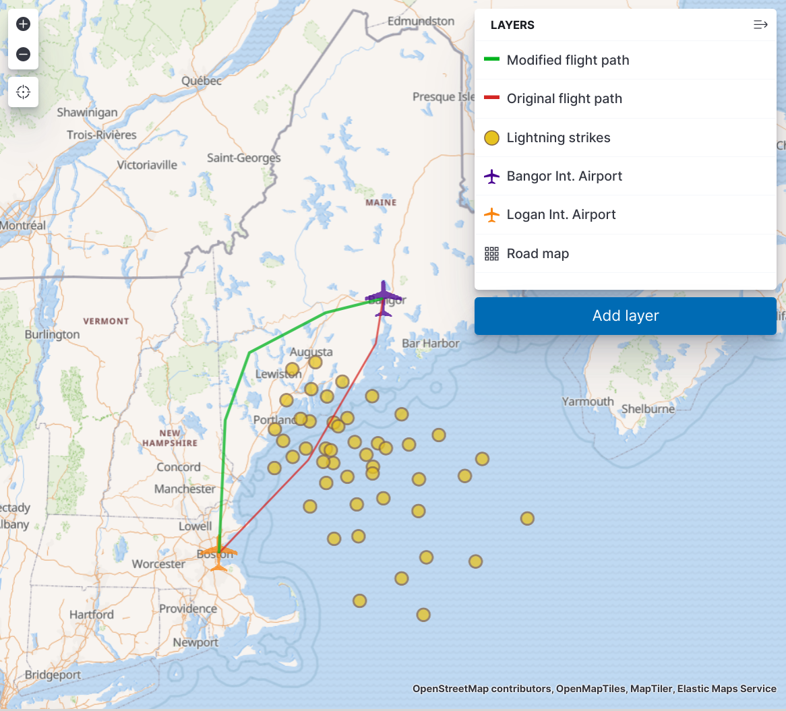

Tutorial: Index GeoJSON data
editIn this tutorial, you’ll build a customized map that shows the flight path between two airports, and the lightning hot spots on that route. You’ll learn to:
- Import GeoJSON files into Kibana
- Index the files in Elasticsearch
- Display the data in a multi-layer map
Before you begin
editThis tutorial requires you to download the following GeoJSON sample data files. These files are good examples of the types of vector data that you can upload to Kibana and index in Elasticsearch for display in Maps.
The data represents two real airports, two fictitious flight routes, and fictitious lightning reports. You don’t need to use all of these files. Feel free to work with as many files as you’d like, or use valid GeoJSON files of your own.
Create and set up a map
edit- Create a new map.
-
Zoom in on the New England area in the northeast United States.
You’re adding flight paths to this area, and this sets up the map for a good view of the data.

Upload and index GeoJSON files
editFor each GeoJSON file you downloaded, complete the following steps:
- Click Add layer.
- From the list of layer types, click Upload file.
-
Using the File Picker, upload the GeoJSON file.
Depending on the geometry type of your features, this will auto-populate Index type with either geo_point or geo_shape and Index name with
<file name>. -
Click Import file.
You’ll see activity as the GeoJSON Upload utility creates a new index and data view for the data set. When the process is complete, you should receive messages that the creation of the new index and data view were successful.
- Click Add layer.
- In Layer settings, adjust settings and properties as needed.
- Click Keep changes.
-
Once you’ve added all of the sample files, save your map.
At this point, you could consider the map complete, but there are a few additions and tweaks that you can make to tell a better story with your data.

Add a heatmap aggregation layer
editLooking at the Lightning detected layer, it’s clear where lightning has
struck. What’s less clear, is if there have been more lightning
strikes in some areas than others, in other words, where the lightning
hot spots are. An advantage of having indexed
geo_point data for the
lightning strikes is that you can perform aggregations on the data.
- Click Add layer.
-
From the list of layer types, click Heat map.
Because you indexed
lightning_detected.geojsonusing the index name and patternlightning_detected, that data is available as a geo_point aggregation. -
Select
lightning_detected. -
Click Add layer to add the heat map layer "Lightning intensity".
The remaining default settings are good, but there are a couple of settings that you might want to change.
-
Play around with the Layer Style > Color range setting.
Again the default looks good, but feel free to choose a different color range.
-
When you’re finished modifying settings, click Keep changes.
With your new lightning heat map layer, your map should look like this:

Organize the layers
editConsider ways you might improve the appearance of the final map. Small changes in how and when layers are shown can help tell a better story with your data. Here are a few final tweaks you might make:
- Update layer names
- Adjust styles for each layer
- Adjust the layer order
- Decide which layers to show at different zoom levels
When you’ve finished, again be sure to save your work .
Your final map might look like this: